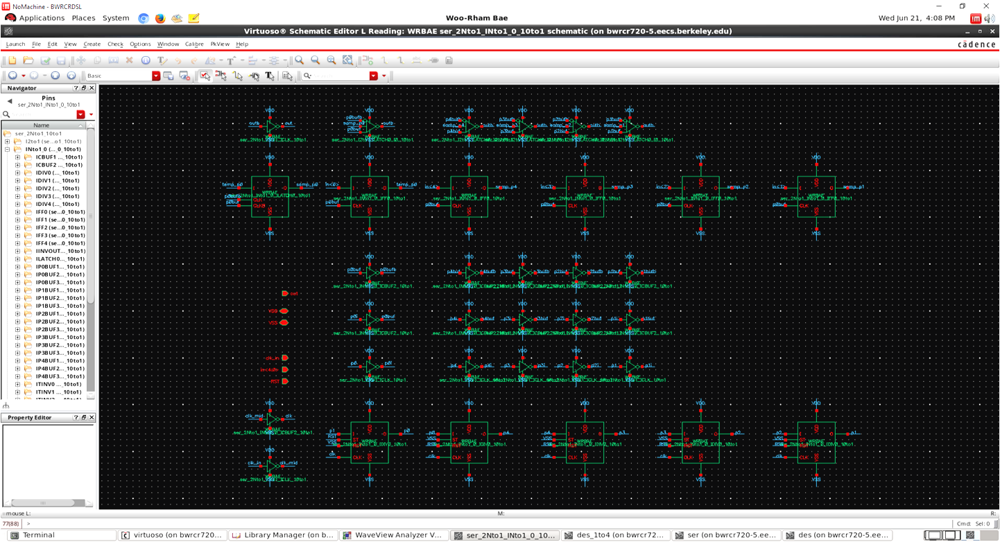
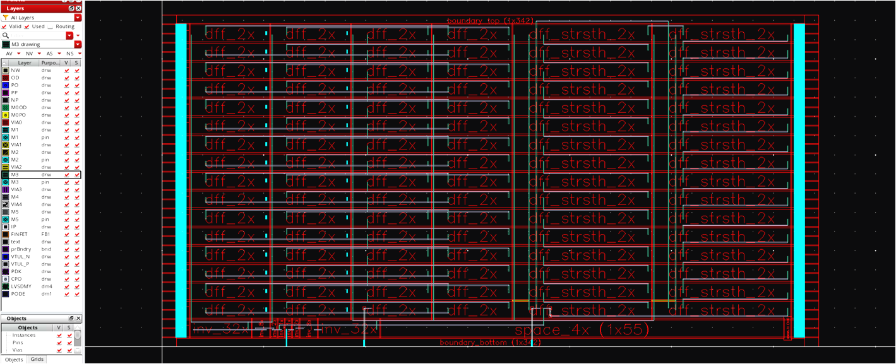

CMOS SER/DES generator¶
This section describes how to generate CMOS SER/DES with a flexible SER/DES ratio.
Structure¶
2N:1 serializer
 serdes
serdes- Assuming half-rate clocking
- Two step: 2N:2, 2:1 for arbitrary N
- Not 2:1 tree structure: more flexible SER ratio
N:1 serializer
 serdes
serdes- Multi-phase divider using shift register
- RESET signal required
- One FF in divider reset to high, and the others reset to low
- Retiming flip-flops for the input
- N:1 MUX using tri-state inverters
- Multi-phase divider using shift register
2NM:1 serializer
 serdes
serdes- 3 stage (2NM:2N:2:1)
- For high serialization ratio
1:N deserializer
 serdes
serdes- Shift-register divider for arbitrary division ratio
- First half of the FFs reset to high, and the rest of them reset to low
- No narrow pulse from the divider
- One stage: less speed limitation with increased division ratio unlike SER
- Shift-register divider for arbitrary division ratio
Setup (for BWRC users)¶
Clone main repo (init_tech).
$ git clone git@bwrcrepo.eecs.berkeley.edu:erichang/craft_adc.git $ cd craft_adc $ git submodule init $ git submodule update
Clone laygo
$ git clone git@github.com:ucb-art/laygo.git
Copy some files to your working directory (if you don’t have them)
cp /tools/projects/wrbae/serdes_test/craft_adc/serdes_spec.yaml . cp /tools/projects/wrbae/serdes_test/craft_adc/serdes_size.yaml . ln -s /tools/projects/jdhan/BAG/TISARADC_init_tech/ge_tech_microtemplates_dense . cp /tools/projects/wrbae/serdes_test/craft_adc/laygo_config.yaml .
Open cds.lib and add
DEFINE serdes_templates ./laygo/generators/serdes/serdes_templates
Open bag_libs.def and add
serdes_templates $BAG_WORK_DIR/laygo/generators/serdes/BagModules and modify 'logic_templates' path to $BAG_WORK_DIR/laygo/generators/logic/BagModules
Open .cshrc_bag and comment out
setenv BAG_PYTHON "/tools/projects/erichang/programs/anaconda3/bin/python"and add
setenv BAG_PYTHON "/tools/projects/eeis/BAG_2.0/anaconda2/bin/python"Open start bag.sh and comment out
"set = cmd~~"and"exec $cmd~~"and add thisexec ${BAG_PYTHON} -m IPythonIn virtuoso, create a new library called serdes_generated
Serializer Generation¶
Set your SER parameters in serdes_spec.yaml and serdes_size.yaml
- num_ser: 2Nto1 SER ratio, 2N = num_ser (even number only)
- num_ser_3rd: 3rd stage SER ratio for 3-stage SER
- m_dff: DFF size
- m_cbuf1: Input clock buffer, first stage
- m_cbuf2: Input clock buffer, second stage
- m_pbuf1: Multiphase clock buffer, first stage
- m_pbuf2: Multiphase clock buffer, second stage
- m_mux: Tri-inv size
- m_out: Output inv size
- m_ser: 2to1 halfrate SER size
Generate N:1 SER
a) Please note that num_ser in serdes_spec.yaml equals 2N
b) Generate layout
In BAG window, run laygo/generators/serdes/ser_layout_generator.py
The layout shown below is for 5:1 serializer.
 serdes
serdesc) Generate schematic
run laygo/generators/serdes/ser_schematic_generator.py
The schematic shown below is for 5:1 serializer.
serdes
Generate 2:1 SER with a half-rate clock
a) Generate layout
run laygo/generators/serdes/ser_2to1_halfrate_layout_generator.py
b) Generate schematic
run laygo/generators/serdes/ser_2to1_halfrate_schematic_generator.py
Generate 2N:1 SER
a) Generate layout
run laygo/generators/serdes/ser_2Nto1_layout_generator.py
The layout shown below is for 10:1 serializer.
 serdes
serdesb) Generate schematic
run laygo/generators/serdes/ser_2Nto1_schematic_generator.py
(Optional) Generate 3-stage SER for higher serialization ratio of M x 2N¶
Generate M:1 SER
a) Open serdes_spec.yaml and set num_ser to 2M
b) Generate layout of M:1 SER
run laygo/generators/serdes/ser_layout_generator.py
Generate (M x 2N):1 SER
a) Open serdes_spec.yaml. Return num_ser to 2N and set num_ser_3rd to M
b) Generate layout
run laygo/generators/serdes/ser_3stage_layout_generator.py
The layout shown below is for 10:1 serializer.
 serdes
serdesc) Generate schematic
run laygo/generators/serdes/ser_3stage_schematic_generator.py
Deserializer Generation¶
Set your DES parameters in serdes_spec.yaml and serdes_size.yaml
- num_des: Deserialization ratio
- num_flop: No. flops in a single column, for reducing layout height for higher N
- m_des_dff: DFF size
Generate 1:N DES
a) Open serdes_spec.yaml and set num_des and num_flop
num_des = N, num_flop can be 1 or 2, num_flop adjusts the aspect ratio of the layout
b) Generate layout
run laygo/generators/serdes/des_layout_generator.py
c) Generate schematic
run laygo/generators/serdes/des_schematic_generator.py
The layout shown below is for 1:32 deserializer.
 serdes
serdes
You can modify the aspect ratio of the layout by changing num_flop in serdes_spec.yaml. (num_flop = 1 or 2)
serdes16
The schematic shown below is for 1:4 deserializer.
 serdes
serdes